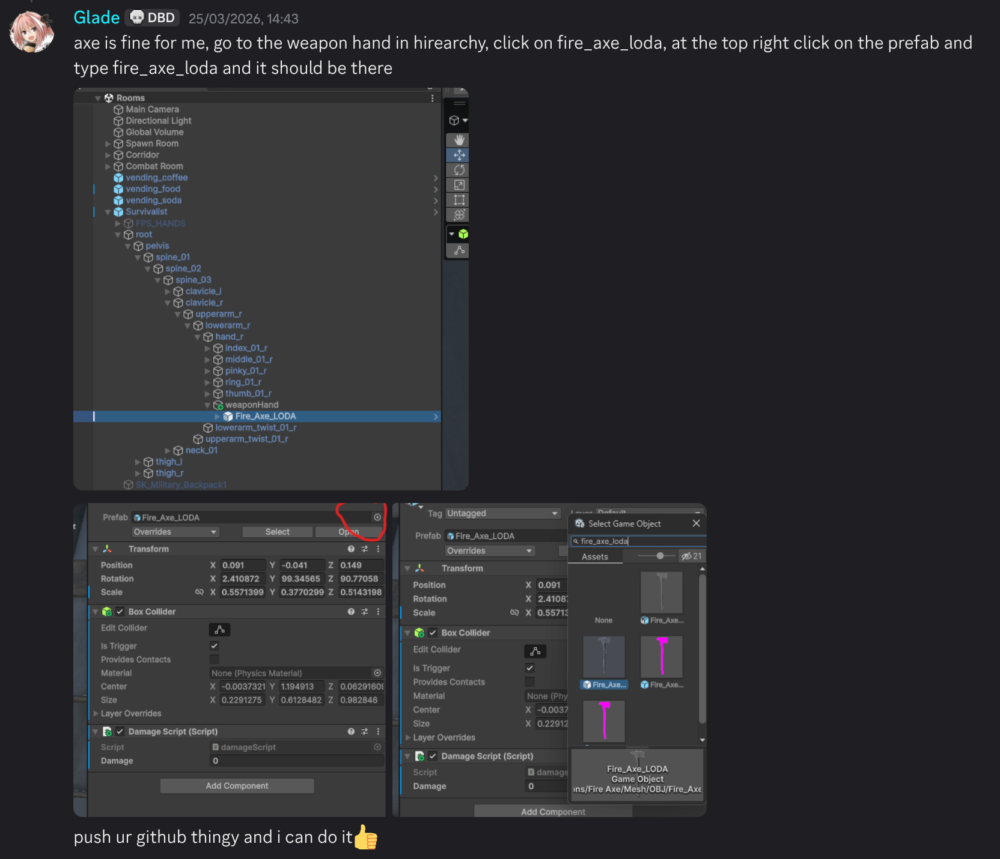
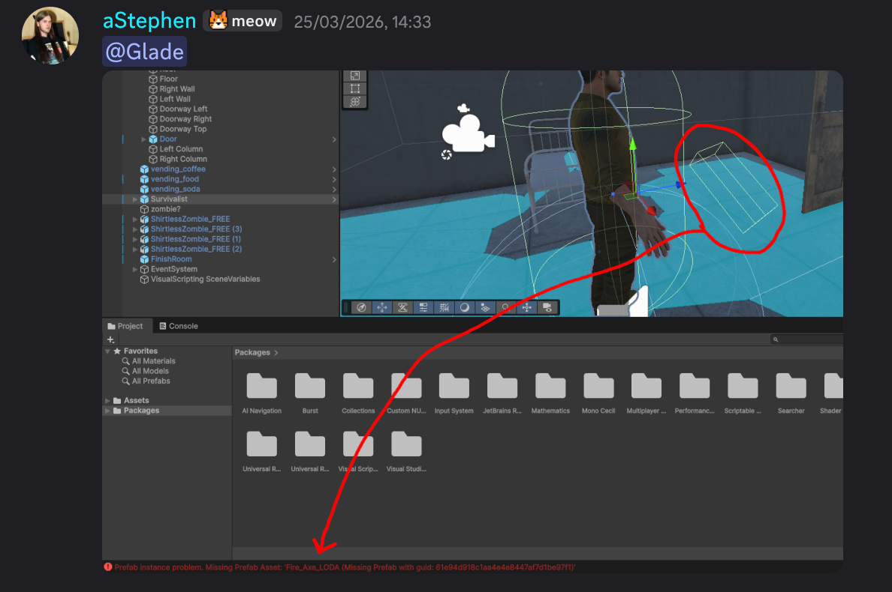

Entry #8
Eighth log: 25/03/26
PRESENTATION IS FINISHED. It almost didn't happen as well so I am quite fortunate to be able to say that. I only found out last friday that apparently we were due to present THAT monday. So thankfully my professor was kind enough to slot us in this Monday and present. Since our theme for our game was zombies, we thought it would be fitting to all wear some green for our presentation. As well as that I think it went quite well, people seemed to really like it. Unfortunately we weren't able to show a live demo of our game because the laptop it was on decided to just not connect to the projector, so there was that. Other than that, GREAT success i'd say!

Our artist also made a nice desktop logo for our game which I thought was pretty cool. I haven't really shown off much of what he has done so here are some of the things for our GUI that he designed:


PRESENTATION IS FINISHED. It almost didn't happen as well so I am quite fortunate to be able to say that. I only found out last friday that apparently we were due to present THAT monday. So thankfully my professor was kind enough to slot us in this Monday and present. Since our theme for our game was zombies, we thought it would be fitting to all wear some green for our presentation. As well as that I think it went quite well, people seemed to really like it. Unfortunately we weren't able to show a live demo of our game because the laptop it was on decided to just not connect to the projector, so there was that. Other than that, GREAT success i'd say!
Troubleshooting:
Leading up to the presentation, we didn't get a whole lot of progress done on our game but we did do a bit of troubleshooting. We just did a few minor things like getting the github repo working for everyone, explaining what our code does/where to put certain models or rooms. This lab was essentially just an induction to our own game and making sure everyone understood what was going on.
Leading up to the presentation, we didn't get a whole lot of progress done on our game but we did do a bit of troubleshooting. We just did a few minor things like getting the github repo working for everyone, explaining what our code does/where to put certain models or rooms. This lab was essentially just an induction to our own game and making sure everyone understood what was going on.


Our artist also made a nice desktop logo for our game which I thought was pretty cool. I haven't really shown off much of what he has done so here are some of the things for our GUI that he designed: